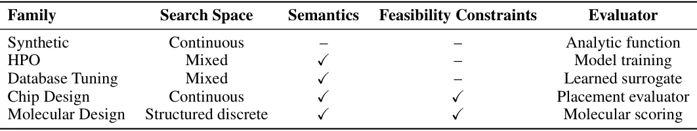
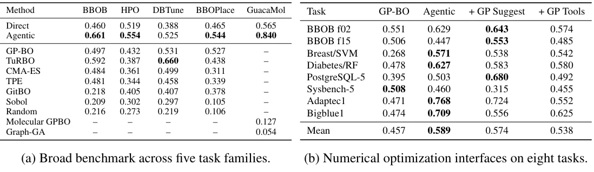
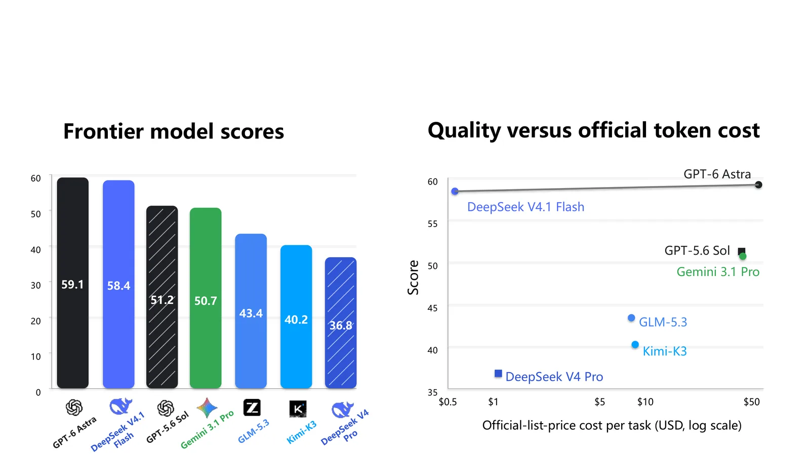

O problema: otimizar quando avaliar é caro
Otimização black-box (BBO) aparece em problemas onde você consegue avaliar uma solução candidata, mas não tem acesso à forma analítica da função objetivo nem aos seus gradientes. Exemplos clássicos incluem design de moléculas, ajuste de hiperparâmetros de modelos de machine learning, configuração de bancos de dados e projeto de chips. O que torna esses problemas difíceis é que cada avaliação pode custar caro: treinar um modelo para medir a qualidade de um conjunto de hiperparâmetros pode levar horas; sintetizar uma molécula para testar suas propriedades pode custar milhares de dólares.
Métodos tradicionais de BBO, como otimização bayesiana e algoritmos evolutivos, trabalham principalmente com observações numéricas. Eles usam heurísticas predefinidas: modelos substitutos (surrogates), funções de aquisição, operadores de busca. O problema é que problemas reais vêm com informação adicional que esses métodos não conseguem explorar facilmente: descrições textuais da tarefa, semântica das variáveis, conhecimento de domínio.
Modelos de linguagem grandes (LLMs) oferecem uma maneira natural de incorporar essa informação junto com o histórico numérico de busca. Isso motivou uma linha crescente de trabalhos que usam LLMs para propor candidatos, modelar o objetivo ou apoiar etapas específicas do processo de otimização. Mas a maioria desses trabalhos trata o LLM como um componente fixo: a cada rodada, o algoritmo chama o LLM para executar uma operação predefinida, e o resto do loop de otimização já está especificado de antemão.
A ideia: agentes que controlam o loop de otimização
Trabalhos recentes começaram a explorar uma formulação mais agêntica, na qual o LLM interage com um ambiente de otimização em vez de servir como um operador fixo. Antes de submeter um candidato, o LLM pode inspecionar o estado da busca, executar código, invocar ferramentas específicas de domínio, observar suas saídas e decidir qual ação tomar a seguir. Crucialmente, a sequência dessas ações intermediárias é determinada online pelo LLM, não prescrita pelo algoritmo de otimização. Os autores chamam isso de Agentic BBO.
O problema é que colocar o LLM nesse papel agêntico torna comparações entre métodos menos diretas. O comportamento de busca resultante depende não só do problema de otimização, mas também de qual informação o agente observa, quais ferramentas ele pode acessar e como o harness (o sistema que gerencia a interação) funciona. Estudos existentes de Agentic BBO fazem escolhas diferentes ao longo dessas dimensões e são tipicamente avaliados dentro de domínios individuais, tornando seus resultados difíceis de comparar.
Este paper introduz o AgenticBBO-Bench, o primeiro benchmark cross-domain para Agentic BBO. Ele cobre cinco famílias de tarefas: funções sintéticas (BBOB), otimização de hiperparâmetros (HPO), ajuste de bancos de dados (DBTune), design de chips (BBOPlace) e design molecular (GuacaMol). Todas as tarefas seguem um protocolo unificado de orçamento finito de avaliações, permitindo comparação direta entre agentes LLM e otimizadores numéricos tradicionais.

Como funciona o benchmark
O AgenticBBO-Bench define um protocolo comum: cada tarefa recebe um orçamento fixo de novas avaliações (além de um conjunto inicial de observações). O desempenho é medido não só pela solução final, mas por toda a trajetória best-so-far. Especificamente, o score combina a qualidade média normalizada ao longo da trajetória (peso 70%) com a qualidade da melhor solução final (peso 30%).
A normalização é necessária porque escalas de objetivo diferem entre tarefas. Para cada tarefa, os autores definem uma função de qualidade normalizada q(·) que mapeia valores de objetivo para um intervalo comum. O score final S é dado por: S = 0.7 · (1/B) Σ q(y*_j) + 0.3 · q(y*_B), onde B é o orçamento de avaliações e y*_j é o melhor valor observado após a j-ésima avaliação nova.
O benchmark compara duas configurações principais: Direct, onde o LLM recebe a descrição da tarefa e o histórico de otimização no contexto e gera diretamente o próximo candidato; e Agentic, onde o LLM opera em um workspace persistente com acesso a Bash/Python, acesso estruturado ao estado da busca e interfaces para submeter candidatos. Ambas as configurações seguem o mesmo protocolo de inicialização e orçamento de avaliações.
Os autores usam DeepSeek V4.1 Flash como modelo padrão e Codex como harness do agente. Todos os experimentos de ablação usam um pool comum de oito tarefas, com duas tarefas de cada família não-molecular, balanceando cobertura cross-domain e custo experimental.
Resultados principais: agentes superam otimizadores tradicionais
A Tabela 2a compara Direct e Agentic com baselines numéricos representativos nas cinco famílias. Agentic supera Direct em todas as cinco famílias, com melhoria relativa média de 30.3%. As maiores melhorias aparecem em BBOB, de 0.460 para 0.661 (+43.7%), e GuacaMol, de 0.565 para 0.840 (+48.7%).
Comparado com baselines numéricos, Agentic alcança o melhor score em BBOB, BBOPlace, HPO e GuacaMol. TuRBO tem o melhor desempenho em DBTune. Esses resultados demonstram que a formulação agêntica melhora consistentemente sobre otimização LLM direta e é competitiva com otimizadores numéricos estabelecidos em domínios diversos de BBO.
Vale notar que os otimizadores numéricos tradicionais variam bastante em desempenho entre domínios. GP-BO (Gaussian Process Bayesian Optimization) funciona razoavelmente bem em várias tarefas, mas TuRBO domina em DBTune. Métodos evolutivos como CMA-ES e métodos de amostragem como TPE têm desempenho mais fraco na maioria dos domínios. Random e Sobol, que servem como baselines de amostragem, ficam consistentemente abaixo de todos os outros métodos.

Ferramentas numéricas não ajudam consistentemente
Uma pergunta natural é se dar ao agente acesso a ferramentas de otimização numérica melhora o desempenho. Os autores testaram duas variantes: + GP Suggest adiciona uma interface de proposta de candidatos baseada em Gaussian Process; + GP Tools expõe adicionalmente predição do surrogate, scoring de aquisição, diagnósticos e controles sobre a região de busca e política de aquisição. O agente permanece livre para aceitar, modificar ou rejeitar sugestões do GP.
A Tabela 2b mostra que ferramentas GP não melhoram consistentemente o desempenho. A configuração base Agentic alcança o score médio mais alto de 0.589, comparado com 0.574 para + GP Suggest e 0.538 para + GP Tools. Olhando além das médias, o efeito das interfaces GP varia entre tarefas, melhorando o desempenho em algumas e piorando em outras.
Para entender por quê, os autores examinaram como os agentes usam Python e ferramentas baseadas em GP durante a otimização. A Figura 3a mostra que Python customizado permanece comum mesmo depois que ferramentas GP são introduzidas: com + GP Tools, 35.4% das rodadas usam apenas Python e outros 17.4% usam tanto Python quanto ferramentas GP. Isso sugere que os agentes não simplesmente entregam a busca ao otimizador fornecido.
A Figura 3b dá um exemplo concreto na tarefa de placement de chip Bigblue1: o agente ajusta um proxy linear a partir de layouts observados, usa o padrão aprendido para construir um novo placement e continua refinando-o em rodadas posteriores, melhorando o score best-so-far de 0.551 após a primeira avaliação nova para 0.664 após quatro avaliações e 0.676 eventualmente. Este caso sugere que Python customizado permite ao agente construir análises específicas da tarefa a partir da trajetória observada, em vez de depender do viés indutivo fixo de um backend GP fixo.

Semântica ajuda, conhecimento prévio específico nem sempre
Os autores estudaram como informação da tarefa e conhecimento prévio afetam Agentic BBO. Em seis tarefas do mundo real, eles compararam três configurações: Anonymous, que esconde identidades de tarefas e variáveis; Semantic, que restaura semântica de tarefas e parâmetros; e Full Prior, que adicionalmente fornece conhecimento de domínio.
Os resultados mostram que semântica consistentemente ajuda, elevando o score médio de 0.465 para 0.595. Conhecimento prévio adicional traz ganhos em algumas tarefas (Breast/SVM, Diabetes/RF, PostgreSQL-5), mas prejudica em outras (Sysbench-5, Adaptec1, Bigblue1), resultando em um score médio de 0.587, ligeiramente abaixo de Semantic.
A análise qualitativa revela que conhecimento prévio específico pode ser menos confiável que semântica geral. Por exemplo, em tarefas de placement de chip, o conhecimento prévio sugere que wirelength (comprimento dos fios) é o objetivo principal, mas o avaliador real usa uma combinação ponderada de wirelength, densidade e outras métricas. Quando o agente otimiza apenas wirelength, pode piorar o objetivo real.
Isso sugere que, embora semântica de tarefas e variáveis seja amplamente útil, conhecimento prévio mais específico precisa ser calibrado cuidadosamente para o objetivo real. Informação de domínio genérica funciona melhor que heurísticas específicas que podem não se alinhar com a função objetivo verdadeira.
Otimizadores numéricos podem absorver ganhos do agente
Uma terceira questão explorada pelos autores é: quanto do ganho de desempenho vem do LLM tomar decisões durante a busca versus simplesmente estabelecer uma boa trajetória inicial? Para responder isso, eles testaram uma configuração híbrida: o agente executa as primeiras rodadas de otimização e então um otimizador numérico (GP-BO) continua a partir daí.
Os resultados mostram que, em muitos casos, GP-BO pode efetivamente absorver ganhos da trajetória estabelecida pelo agente. Em algumas tarefas, a configuração híbrida alcança desempenho comparável ou até superior ao Agentic puro. Isso sugere que parte do valor do agente está em explorar o espaço de busca de maneira informada nas fases iniciais, estabelecendo uma região promissora que métodos numéricos podem então refinar eficientemente.
No entanto, isso não significa que o agente seja dispensável. Em tarefas onde a estrutura do problema é complexa ou a semântica é crucial, o agente continua sendo necessário durante toda a trajetória. A configuração híbrida funciona melhor quando o problema tem estrutura que GP-BO pode modelar bem uma vez que uma região promissora foi identificada.
Este resultado tem implicações práticas: em cenários onde cada avaliação é muito cara, pode fazer sentido usar o agente para as primeiras rodadas e então mudar para um otimizador numérico mais rápido e barato para refinamento. A escolha depende do trade-off entre custo de inferência do LLM e custo de avaliação do objetivo.
Comparação de modelos de linguagem: desempenho e custo
Os autores introduziram um desafio frontier de cinco tarefas dentro do AgenticBBO-Bench e avaliaram sete LLMs sob o harness Codex: GPT-6 Astra, DeepSeek-V4.1-Flash, GPT-5.6 Sol, Gemini 3.1 Pro, GLM-5.3, Kimi-K3 e DeepSeek V4 Pro. O desafio usa uma tarefa de cada família (exceto GuacaMol, que tem duas) para balancear cobertura de domínio e custo experimental.
GPT-6 Astra alcançou o melhor score geral de 59.1, seguido por DeepSeek-V4.1-Flash com 58.4. No entanto, quando se considera o custo oficial de tokens por tarefa, DeepSeek-V4.1-Flash oferece melhor custo-benefício. A Figura 1 mostra que modelos com desempenho de otimização similar podem incorrer em custos de inferência substancialmente diferentes.
GPT-6 Astra e DeepSeek-V4.1-Flash ficam na fronteira de Pareto de desempenho e custo entre os modelos avaliados. GPT-5.6 Sol e Gemini 3.1 Pro têm desempenho intermediário, enquanto GLM-5.3, Kimi-K3 e DeepSeek V4 Pro ficam abaixo da fronteira. Vale notar que esses custos são baseados em preços oficiais de lista e podem variar com descontos ou mudanças de preço.

Limitações e o que fica em aberto
O benchmark cobre cinco domínios, mas cada domínio tem características específicas que podem não generalizar para todos os problemas de BBO. Por exemplo, as tarefas de design molecular usam representações SMILES e scorers específicos; problemas com outras representações moleculares ou objetivos diferentes podem ter comportamento distinto.
Os experimentos usam orçamentos de avaliação fixos que variam entre famílias (de 20 a 100 novas avaliações). Em aplicações reais, o orçamento apropriado depende do custo de avaliação e do valor de melhorias incrementais. O benchmark não explora sistematicamente como o desempenho relativo muda com orçamentos muito menores ou muito maiores.
O estudo de ferramentas numéricas se concentra em interfaces baseadas em Gaussian Process. Outras ferramentas, como métodos de amostragem, otimizadores evolutivos ou técnicas de modelagem específicas de domínio, podem ter padrões de interação diferentes com o agente. A conclusão de que ferramentas não ajudam consistentemente pode não se aplicar a todos os tipos de ferramentas.
A análise de conhecimento prévio mostra que informação de domínio específica pode prejudicar quando não está bem alinhada com o objetivo real. Mas o paper não propõe um método sistemático para calibrar ou validar conhecimento prévio antes de fornecê-lo ao agente. Isso permanece uma questão em aberto para trabalhos futuros.
Finalmente, todos os experimentos usam o harness Codex e um conjunto específico de interfaces de ambiente. Diferentes harnesses podem levar a comportamentos diferentes, e a sensibilidade a escolhas de design do harness não é explorada sistematicamente. Benchmarks futuros podem precisar padronizar não só as tarefas, mas também o ambiente de interação do agente.
Por que isso importa
AgenticBBO-Bench é o primeiro benchmark que permite comparação direta de agentes LLM e otimizadores numéricos em otimização black-box sob um protocolo unificado. Isso é importante porque estudos anteriores usavam diferentes domínios, orçamentos e configurações de sistema, tornando impossível saber se diferenças de desempenho vinham do método de otimização ou das condições experimentais.
Os resultados mostram que agentes LLM são competitivos com otimizadores numéricos estabelecidos em múltiplos domínios, mas também revelam que o design do sistema agêntico importa. Dar ao agente mais ferramentas não garante melhor desempenho; semântica de tarefas é mais valiosa que heurísticas de domínio específicas; e parte do valor do agente pode estar em estabelecer uma boa trajetória inicial que métodos numéricos podem refinar.
Para desenvolvedores e cientistas de dados que trabalham com problemas de otimização caros, o benchmark oferece um ponto de partida para avaliar se uma abordagem agêntica faz sentido para seu problema. Para pesquisadores de LLMs, ele fornece um conjunto padronizado de tarefas para comparar modelos e designs de sistema em um domínio onde raciocínio, planejamento e uso de ferramentas são todos necessários.
O código está disponível publicamente, permitindo que outros reproduzam os resultados, adicionem novas tarefas ou testem novos modelos e harnesses. Isso deve acelerar o progresso em Agentic BBO ao tornar comparações mais diretas e confiáveis.
O que fica
- AgenticBBO-Bench é o primeiro benchmark unificado para agentes LLM em otimização black-box, cobrindo cinco domínios sob protocolo comum de avaliação.
- Agentes superam otimização LLM direta em todas as famílias e são competitivos com otimizadores numéricos em quatro das cinco, mas ferramentas extras não ajudam sempre.
- Semântica de tarefas melhora desempenho consistentemente; conhecimento prévio específico pode prejudicar se não estiver bem alinhado com o objetivo real.
- GPT-6 Astra e DeepSeek V4.1 Flash ficam na fronteira de Pareto de desempenho e custo entre sete modelos avaliados no desafio frontier de cinco tarefas.
Paper original: A Closer Look at Agentic BBO: Benchmarking LLM Agents for Black-Box Optimization
Comentários
Nenhum comentário ainda. Seja o primeiro.